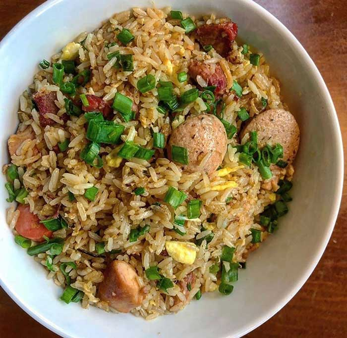

Arroz chaufa

Descripción del plato
El arroz chaufa es un plato muy popular del Perú, pero su origen proviene de la cultura China, a lo largo de los años el arroz chaufa se ganó una gran popularidad
en las mesas peruanas. Su preparación es bastante sencilla, básicamente freímos o tostamos un poco de arroz, le agregamos huevos, carnes picadas y otros ingredientes,
eso es todo. Aunque esconde algunos secretos adicionales en su interior, así que no te pierdas esta receta paso a paso.
Ingredientes
- 1 kg de arroz.
- 100 g de cebolla china picada.
- 1 cucharada de ajo molido.
- Aceite vegetal.
- 1 cucharada de salsa de ostión.
- Sillao.
- Sal y pimienta.
- Lomo fino o alguna carne de tu gusto.
Preparación
- En una sartén echamos un chorro de aceite con media tasa de cebolla china picada muy fina y una cucharada de ajo molido.
- Dejamos freír por dos minutos, añadimos media tasa de pimiento rojo picado en trozos chiquitos, una taza de alguna carne que sea de tu gusto.
- Dejamos dorar todo por dos minutos.
- Añadimos cuatro tazas de arroz cocido, añadimos el fuego al máximo y dejamos dorar hasta que el arroz se este friendo.
- Cuando esté friéndose bien, damos vuelta al arroz y lo mezclamos, dejamos de mover y volvemos a dejar dorar por unos segundos.
- Repetimos el mismo proceso de mezclar y dejar dorar por al menos 3 veces.
- Añadimos cuatro cucharadas de aceite vegetal, ocho cucharadas de sillao, sal, pimienta, un poquito de azúcar.
- Una cucharada de salsa de ostión, dos tasas de cebolla china, añadimos cuatro huevos en modo de tortilla, damos la última movida y a comer.
Regresar a la página principal.